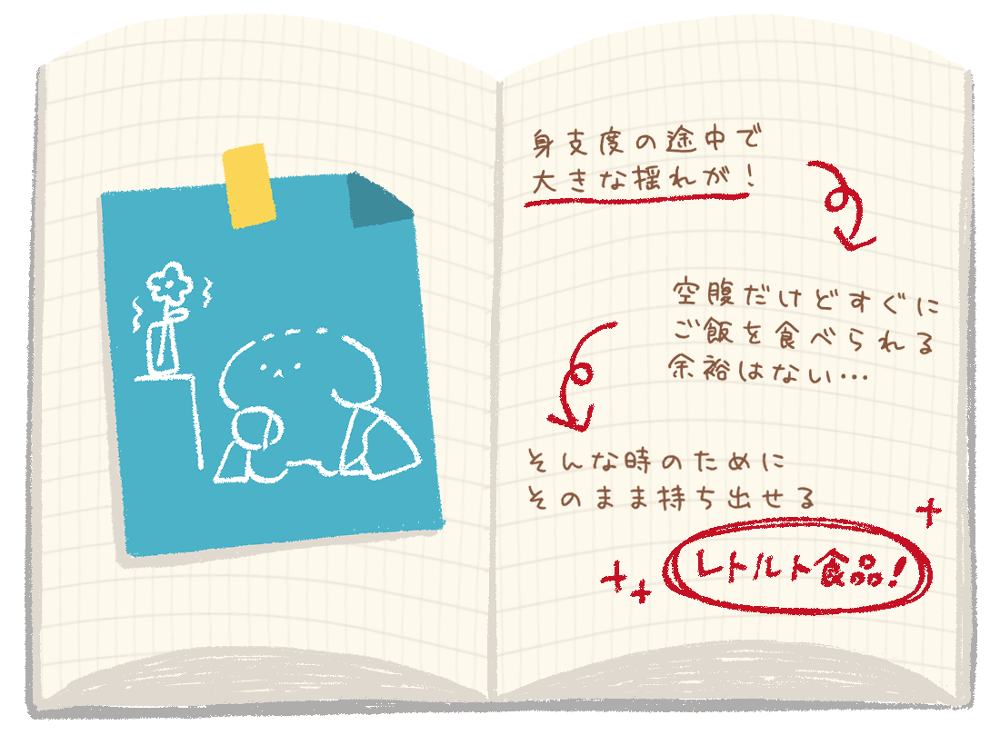
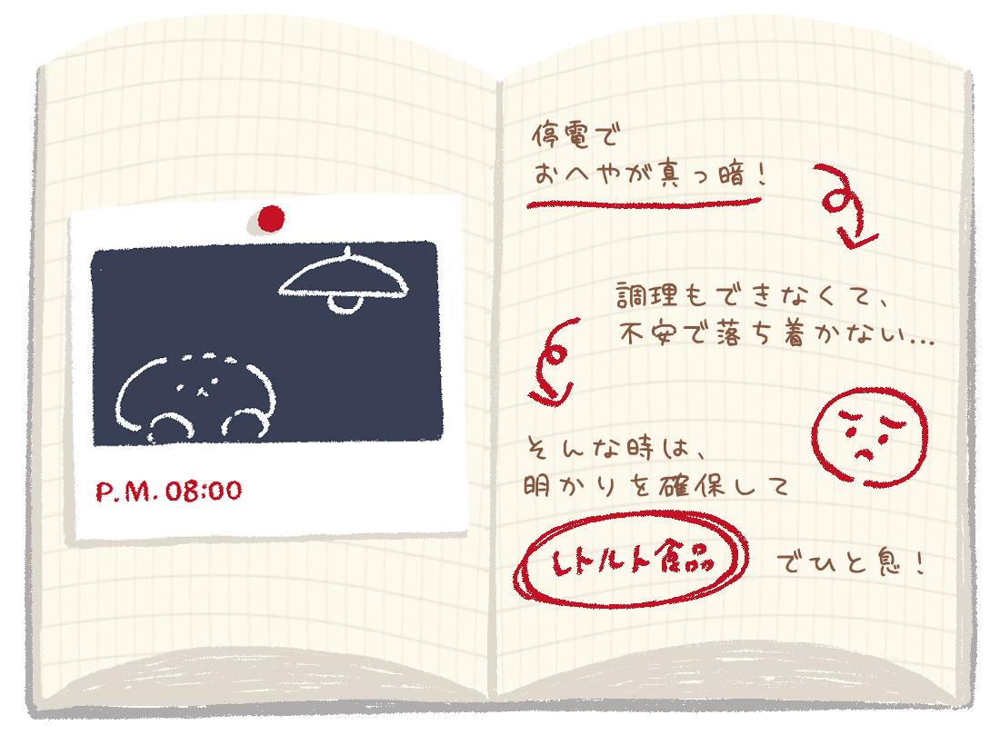
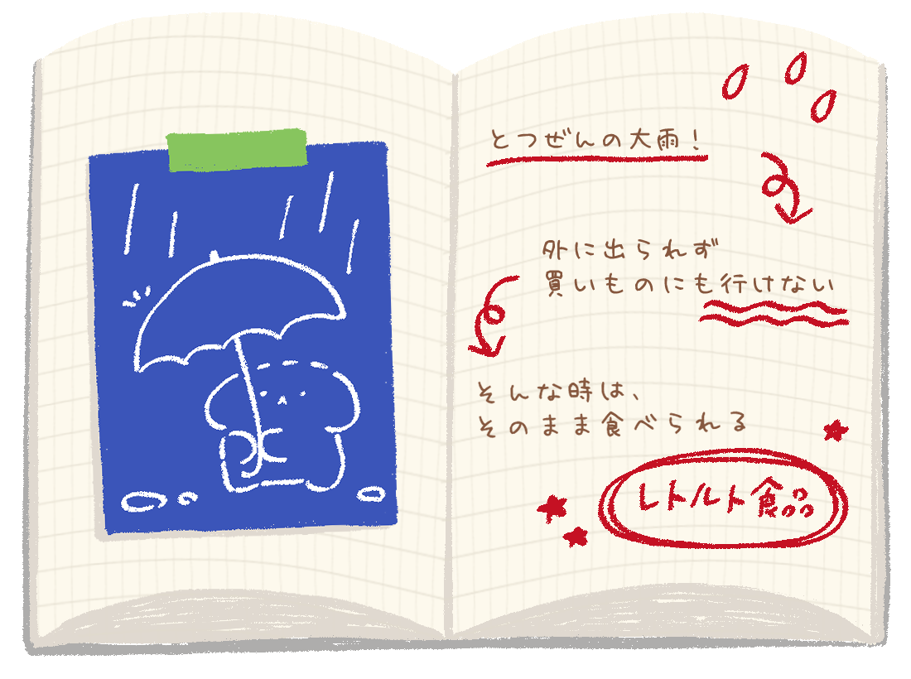
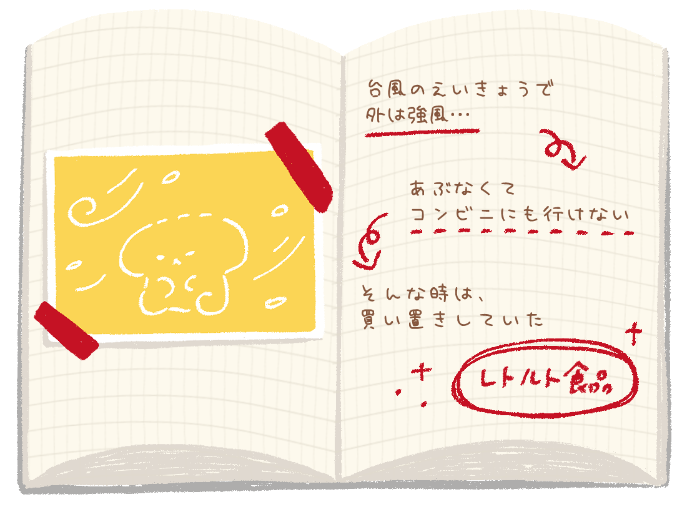
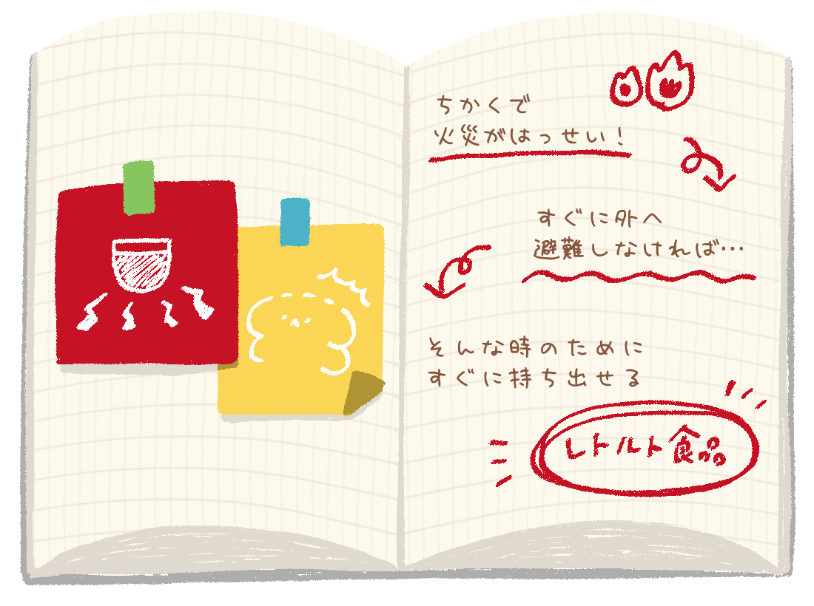
2
外に逃げて助けをよぶA.外に逃げて助けをよぶ
2
自分から先に避難するA.自分から先に避難する
2
ちかくの大人に知らせるA.ちかくの大人に知らせる
らいす
しろ色のぬいぐるみ うまれたばかりで知らないことがいっぱい「食べること」も大切です。
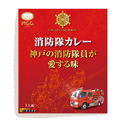
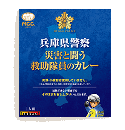
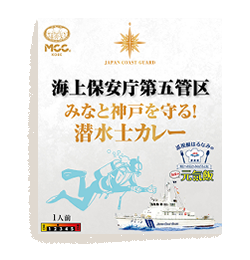
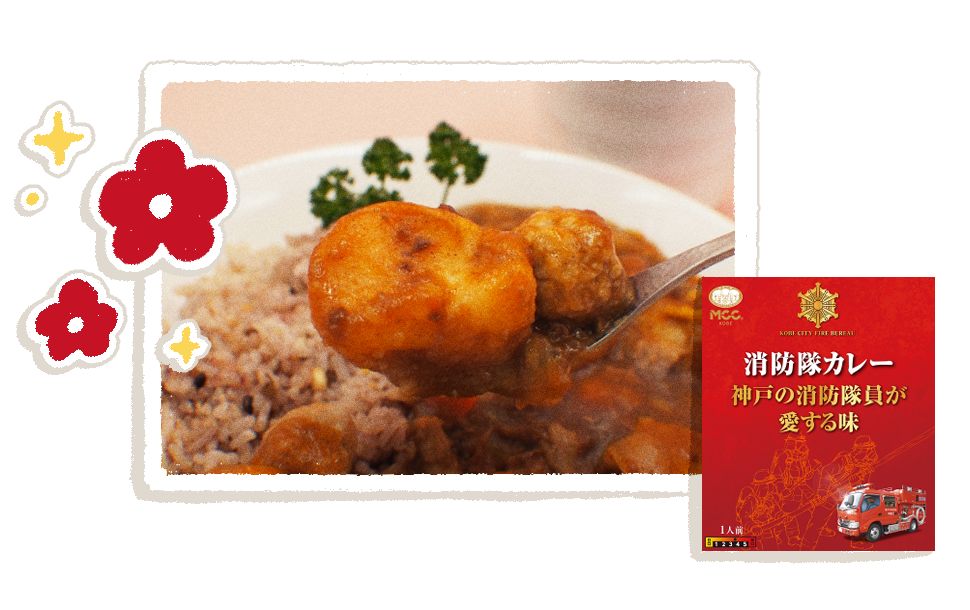
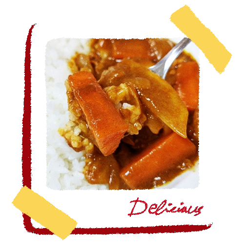
災害時でも “本当においしい” を大切に
非常時でも、食べることで元気になれる味を目指しています。 消防学校の食堂で実際に親しまれてきたカレーをもとにしています。阪神・淡路大震災の経験から生まれたレシピ
神戸市消防局と、エム・シーシー食品株式会社が協力して開発。 現場を知る人たちの声を大切にしながら作られました。標準小売価格518円（税込）
内容量 200g
1
ものを取りに戻る2
外に逃げて助けをよぶ3
エレベーターに乗る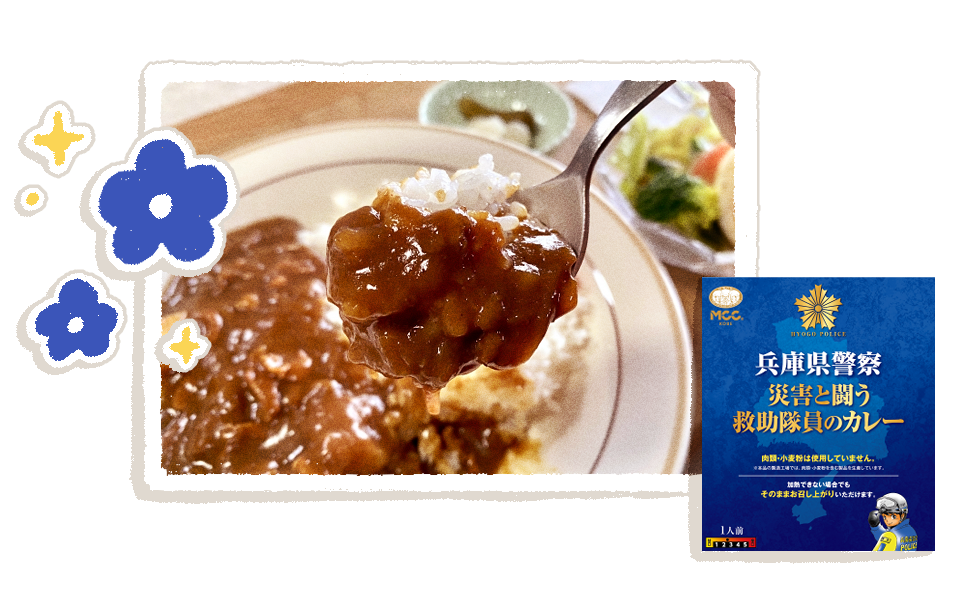
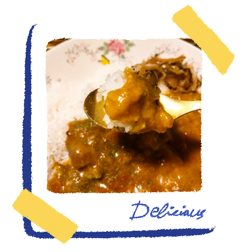
災害時でも “食べやすさ” を大切に
温めてもそのままでも、おいしく食べられる味を目指しています。 じゃがいもとにんじんがごろっと入った、やさしい辛さのカレーです。阪神・淡路大震災の経験から生まれた一皿
兵庫県警察と、エム・シーシー食品株式会社が協力して開発。 救助隊員の声をもとに、幅広い年代に食べやすい味に仕上げています。標準小売価格421円（税込）
内容量 200g
1
だれかが逃げるのをまつ2
自分から先に避難する3
荷物をさがしてから動く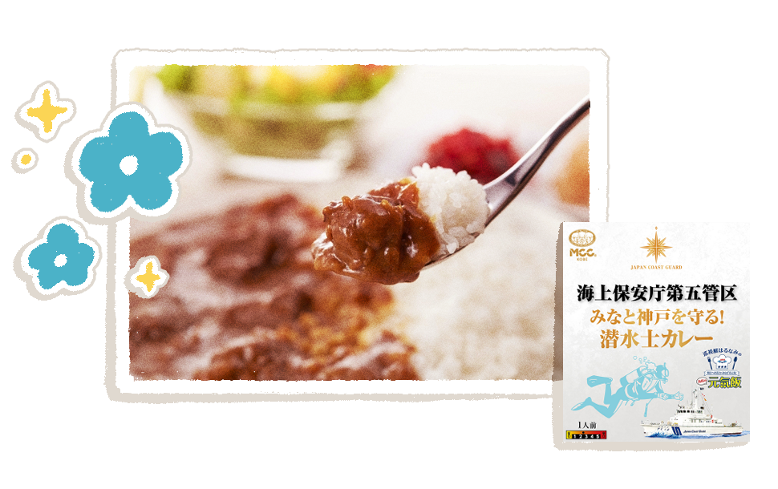
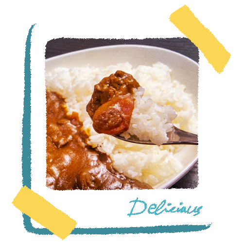
災害時でも “信頼できる味” を大切に
海上保安官を支える巡視船の食事から生まれたカレーです。 粒マスタードがアクセントの、食べごたえあるチキンカレーです。海の現場から生まれたコラボレーション
第五管区海上保安本部と、エム・シーシー食品株式会社が協力して開発。 神戸港の巡視艇「はるなみ」で親しまれてきた味です。標準小売価格518円（税込）
内容量 200g
1
自分だけで助けにいく2
ちかくの大人に知らせる3
そのまま見ている1995年
阪神・淡路大震災1995年
甲南工場で、1997年
甲南工場が1999年
家庭用レトルト食品が2000年
「協創の理念」を掲げた2001年
家庭用レトルト2006年
甲南工場全ラインに2011年
東日本大震災時に2015年
「消防隊カレー」もしものときの備え、足りていますか？
少しの準備が、大きな安心につながります。 今すぐ完璧でなくても問題ありません。 まずは最低限必要な4つから、見てみましょう。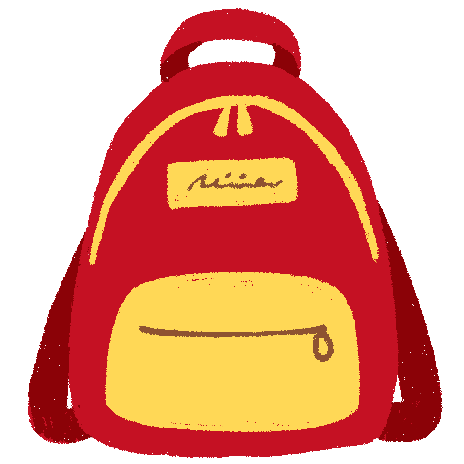
レトルト食品
温めなくても食べられます。 非常時でも、いつもの味を。飲料水
水は重いので、少量でOK。 まずは500mlを数本。ヘルメット
落下物から頭を守ります。 すぐ被れるようにしておきましょう。ライト
停電時の必需品。 電池の確認も忘れずに。1
STEP非常食をひとつ決める
まずは「これだけは置く」を決めましょう。 普段の食事に近い味を選べば、 非常時でも安心です。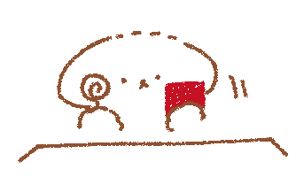
2
STEP置き場所を決めて、家族と共有
どこにあるか分からなければ、 備えは役に立ちません。 置き場所を決め、家族で共有しましょう。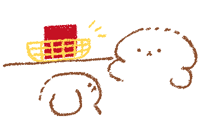
3
STEPときどき見直す
食べたら補充、期限が近づいたら入れ替え。 無理なく続けることが、防災を習慣にします。 そして安心は、備えから生まれます。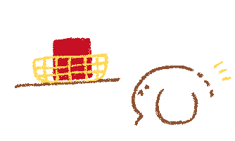
できることから、少しずつ。
それも立派な防災です。